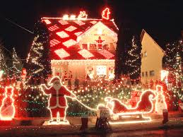

Коледа по света
Англия
Всяка домакиня приготвя коледен пудинг, в който пъхва монета от шест пенса. Някои семейства предпочитат пая пред пудинга или пък маслени сладкиши от бадемово тесто със захаросани плодове. В менюто преди десерта е включена и знаменитата супа от костенурки и, разбирасе пуйката.
В навечерието но Коледа и на следващия ден по улицитемогат да се видят многобройни карнавали и тайствени пиеси в които играят маскирани актьори. По стар езически обичай костюмите им са направени от дълги широки ленти.
Нарастваните на деня е знак на по нови сили и това се празнува по няколко начина: преплуване на река на 25 декември и лов на лисици на 26.
Малко по на север шотландците предпочитат Нова година пред Коледа. Тогава те имат 3 дневна почивка.
Холандия
От векове насам Sinter Klaas (Дядо Коледа) идва от Испания по средата на ноември. Всички, дори и кралицата, го посрещат на пристанището. Едва пристигнал Дядо Коледа тръгва да види дали децата са послушни. Той разполага с три седмици – до 6 декември, за да прецени кой заслужава подарък и кой – не. В деня на отпътуването му всички деца излизат на улицата, размахат знаменца, пишат му писма и всичко това при звъна на чурковни камбани и оръдейни залпове. Приготвят се чифт обувки, пълни със сено и моркови за кончето на Дядо Коледа. Бисквити и бонбони, хвърлени в дворовете, предвещават минаването му през квартала. А постоянният му спътник е Черният Пиет – той носи подаръци за лошите деца.
Дания
Четире седмици преди Коледа датчаните украсяват венец от борови клонки, в който слагат четири свещи и запалват първата. И така всяка неделя до Коледа палят по една. Първата е неделята на запалването. Втората непременно е посветена на приготвянето на сладкишите (непременно с канела). След това трябва да се украси елхата с червени панделки, датски знаменца и сърца от слама. Четвъртата неделя е денят на приятелството и обичта. Тогава се пият топло вино и ракия. Улиците и витрините са оцветени в зелено и червено.
В Дания няма Дядо Коледа, а червен дух на име Жул, който много прилича на снежен човек.
Вечерята на 24 декември е традиционна . херинги, патица или печено прасе с цветно зеле, карамелизирани картофи и компот. За десерт – ориз с бадеми и канела. След това всички пеят и танцуват в очакване на червения дух.
Италия
На 24 декември италианците празнуват и Деня на дървото. Обичаите са много, но общото между тях е голямата козуначена кифла, която служи за коледен сладкиш. Тя се пази за постната вечеря на 24-и и е предшествана от различни каши и змиорки. Традиционната пуйка е за обяда на 25-и.
Коледните пазари затварят вратите си с невероятно шествие на 5-и януари вечерта, точно преди да си появи магьосницата Бефана, която раздава подаръците в по голямата част на Италия. На непослушните деца се полага само по парченце въглен, и то от захар.
Швеция
Там коледа е нещо свещено. Свещено до такава степен че шведите са построили цял лунапарк. Въпреки потока от туристи традициите се спазват стриктно. Например тази със свещичките като в Дания. Коледните празниции започват на 1-ви декември. На 13-ти декември, денят на Санта Лусия, момичетата обличат бели рокли, украсяват главите си с корони от по четири свещи и пеят фолклорни песни. Както в Дания, вечерята минава под знака на херингите и ориза с канела, сервирани върху червена покривка. Един дух, който определя и съдбите, е назначен да раздава подаръците.
Испания
Коледа в Испания е предимно семеен празник: след 22 часа на 24 декември всечки ресторанти са затворени. Хората се прибират вкъщи и чакат литургията в полунощ. Пирът започва след това: моруна, кестени, и пуйка в Южна Испания, бадемова супа и гъска – в Северна. Десертът е бадемов сладкиш с мед.
Германия
Приготовленията за Коледа започват още през ноември. Пешеходните зони и магазините се украсяват. И в Германия Коледата е преди всичко семеен празник. На нея се събира цялото семейство и младите идват при старите, колкото и далече да живеят. Всички заедно сядат около богата трапеза, за да хапнат от традиционните немски специалитети – гъска с ябълки, пфеферкухен и лубкухен и не на последно място щолен. Особеното на този сладки със стафиди и много мазнина в приготвянето му. Той може да се направи месеци предварително и да се яде на Коледа, като запазва вкусовите си качества.
Франция
Франция е голяма държава и всяка област добавя по нещо типично свое към коледната традиция. Още на 1-ви декември всяко дете получава шарен, картонен календар с 24 прозорчета. Зад всяко прозорче има изненада – малко лакоство. На 24-ти декември се отваря последнот и най голямо прозорче. В празничната вечер около бляскавите светлинки на елхата семейството похапва пуйка с кестени и различни изискани специалитети, закупени специално за случая – миди, охлюви, риба сомон и великолепен много скъп пастет от гъши дроб. В Елзас, област която в последните столетия е била ту част от Франция , ту от Германия, традицията гласи : печени кестени и греяно вино.
Гърция
Гръцките коледни и новогодишни традиции са особенно тясно свързани с религията. Елхата се подрежда на 24.12 и си разваля 12 дни след това, точно след Йордановен или Фота, както го наричат гърците. На бъдни вечер се яде също както у нас потно – ошаф, баница, щрудел, боб. Почти същия е и обичаят – коледуване.
И в Гърция Коледа е семеен празник – всички заедно отиват на църква, всички заедно хапват от свинското, печената пуйка със зеле и изключително вкусната баклава със сусам, канела и портокалови кори която не липсва в никоя къща. Подаръците се раздават на Нова година. Айос Василис е любимият светия на гръцките деца. Той е техния Дадо Коледа.